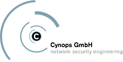

Commercial support
OpenXPKI users are invited to join the project Mailing Lists in order to get free support. However, our software is admittedly complex and it is not always possible to solve complicated requirements via email. Hence if you plan to deploy OpenXPKI in your organization, you may be in need of professional support in order to attain your project goals.
This section lists companies offering commercial support and consultancy for OpenXPKI.
|  |
Cynops GmbH - network security engineering IT Security consulting, development and OpenXPKI specialist located near Frankfurt am Main, Germany
Cynops has been heavily involved in OpenXPKI development from the very
beginning and is committed to supporting the project. |